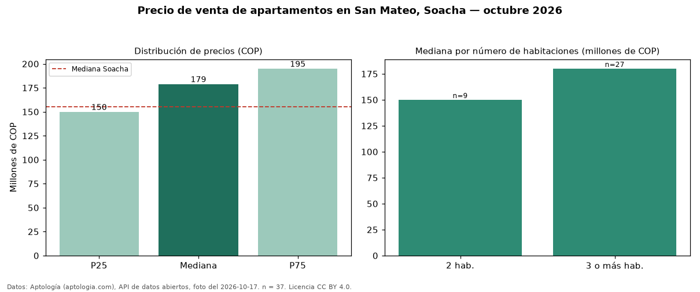

Precio de venta de apartamentos en San Mateo, Soacha — octubre 2026
COP 179 millones es el precio mediano de apartamentos en venta en San Mateo, Soacha (n = 37 avisos). Frente al total de Soacha (COP 155 millones), el barrio está 15 % por encima. El segmento con más oferta es el de 3 o más habitaciones (27 avisos, mediana COP 180 millones); pasar de 2 habitaciones a 3 o más habitaciones sube la mediana 20 %. 19 % de los avisos incluye parqueadero. El aviso más barato pide COP 135 millones y el más caro COP 260 millones. 24 % de los anunciantes publica un teléfono de contacto. La mitad central de los avisos va de COP 150 millones a COP 195 millones (razón 1,3), una dispersión baja. Datos: Aptología (aptologia.com), API de datos abiertos, licencia CC BY 4.0 — https://www.aptologia.com/venta/soacha/san-mateo. Archivos: PDF de 2 páginas, CSV con las cifras y gráfica PNG.

| Avisos únicos | 37 |
|---|---|
| Percentil 25 | COP 150.000.000 |
| Mediana | COP 179.000.000 |
| Percentil 75 | COP 195.000.000 |
Fuente: avisos vigentes de portales inmobiliarios recopilados por Aptología, deduplicados (mínimo 30 avisos únicos por celda). Precios pedidos, no cerrados. Fecha: 2026-10-18.